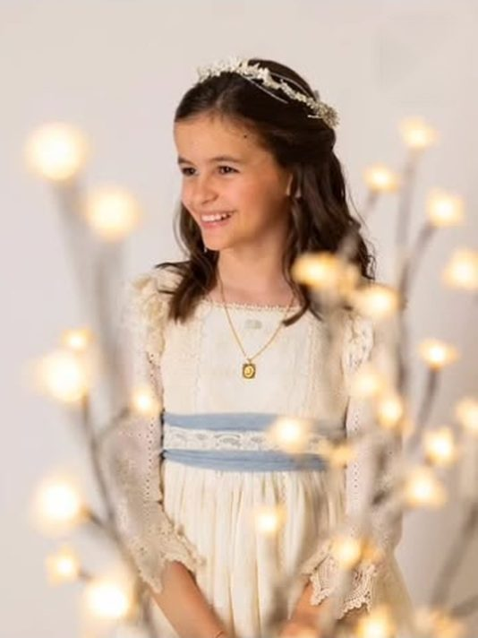
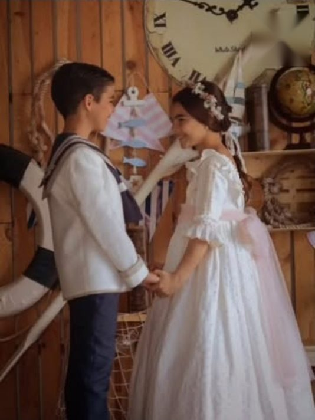
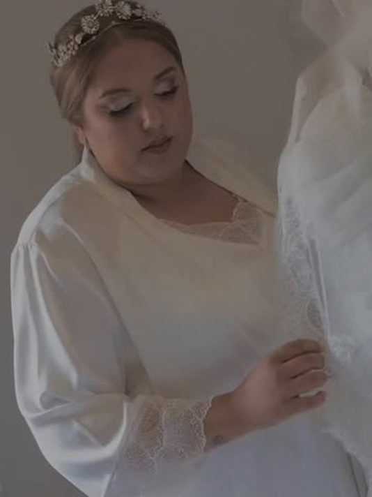
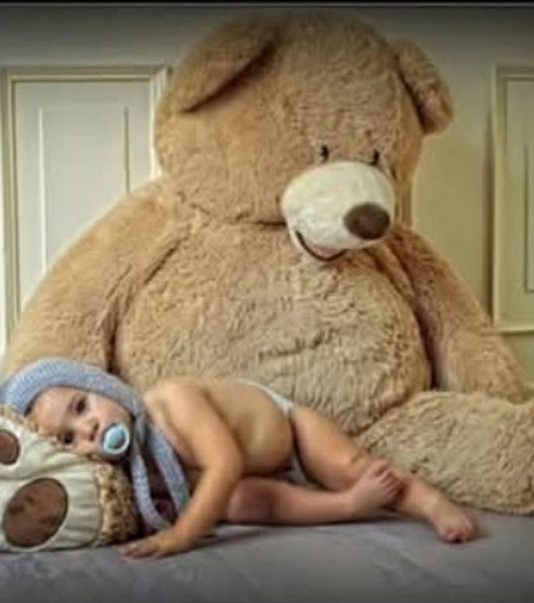
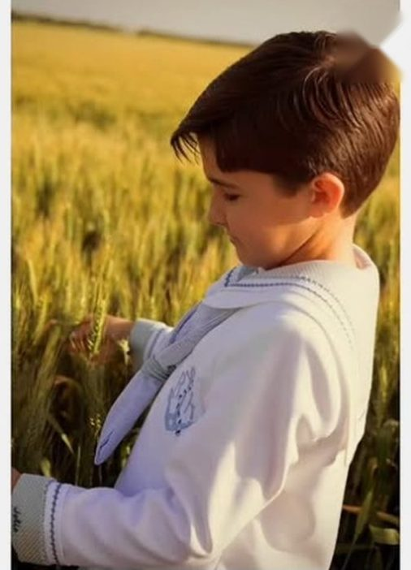
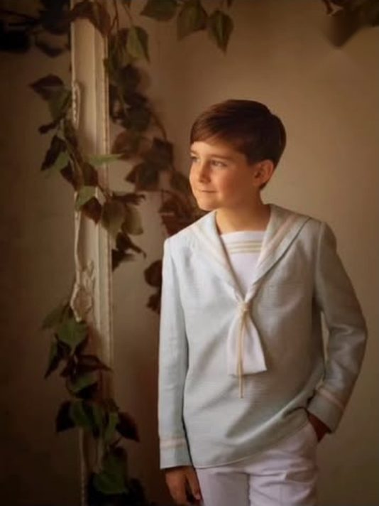
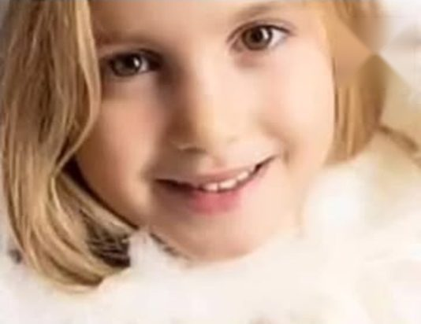

No dejes los momentos importantes a la improvisación.
Fotografía y vídeo digital en Tocina.
Pide tu fechaLa Comunión, en estudio o entre el trigo.
Ver trabajosPreparativos, boda y premamá.
Qué ofrecemosLos primeros días de un bebé, con calma.
Hablemos



Un estudio de barrio donde los retratos se hacen sin prisa y las fotos se entregan cuidadas.
Juan Jesús Casquero lleva más de treinta años haciendo fotografía social en Tocina.
Qué hacemos
Comuniones
Sesión en estudio con decorados, reportaje en exteriores o las dos cosas. Retratos individuales, de hermanos y de familia.
Bodas
Preparativos, ceremonia y celebración, en fotografía y en vídeo.
Premamá
Una sesión tranquila para guardar el embarazo tal y como lo estás viviendo.
Bebés y niños
Recién nacidos, primer año y retratos infantiles con ambientación propia.
Navidad
Reportajes navideños para familias. La agenda se completa pronto, así que conviene reservar con tiempo.
Vídeo digital
Grabación y montaje de tus eventos, para verlos y compartirlos cuando quieras.
Trabajos recientes



Llama o escribe
- Correo
- jjcasquero@gmail.com
- Estudio
- Trv. Rey Juan Carlos I, 23, bajo
41340 Tocina, Sevilla